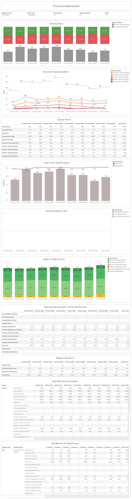

Canlı Rapora Erişin
Güncel The Kurye metriklerini Tableau üzerinde interaktif olarak görüntüleyin.
Dashboard Hakkında
Ne Gösterir?
The Kurye Genel Metrikler dashboard'u, The Kurye operasyonunun zaman bazlı genel sağlığını izler. Günlük sipariş sayısı, iptal oranı, ETA'ya göre geç giden sipariş dağılımı ve lead time trendlerini tek ekranda sunar.
- Sipariş Sayısı: Günlük toplam sipariş sayısı ve ETA uyum yüzdesi bar grafiği
- Geç Giden Sipariş Dağılımı: ETA'dan 0-10, 10-20, 20-30, 30-40 ve 40+ dk geç giden siparişlerin günlük trendi
- Sipariş Verisi Tablosu: Sipariş sayısı, iptal, ETA kategorileri ve toplam geç giden bazında detaylı tablo
- Lead Time Trendi: Günlük ortalama lead time eğrisi ve sipariş hacmi karşılaştırması
- Operasyonel Süreler: Toplama, dağıtım ve bekleme sürelerinin günlük dağılımı
- Müşteri Deneyimi: Şikayet sayısı, ortalama sipariş puanı ve grand ratio metrikleri
Dashboard Önizleme

The Kurye Genel Metrikler — Tableau